Section: Bench Fitting Workshop · Code BF 301
Bench Fitting: Taps, Dies and the Production of a Bolt and Nut
A tap is a hardened screw with flutes cut into it, and a die is a hardened nut with flutes cut into it. That is the whole idea — but the hole the tap enters has to be the right size to within about a tenth of a millimetre, the tool has to be started dead square, and it has to be backed off every half turn. Get any one of those wrong and the tap breaks off inside the work, where nothing will remove it.
1 Aims
The aim of this practical is to produce a mating screw thread pair by hand at the bench — an internal thread cut with a hand tap and an external thread cut with a die — and to assemble them as a working bolt and nut. Through that exercise the student is to become familiar with the bench fitting shop: its holding, cutting, striking and measuring tools, the families of taps and dies and the purpose of each, and the calculations that determine the sizes of the hole and the blank before any cutting begins.
The wider aim is to understand the screw thread as an engineering element. It is the most common detachable joint in existence and the single most common machine element of any kind; it is simultaneously a fastener, a means of transmitting motion, and a mechanical advantage device. Cutting one by hand, and feeling how easily the operation goes wrong, gives an appreciation of thread geometry that no amount of reading provides.
2 Objectives
- To know the materials used in the bench fitting shop.
- To familiarise with the tools used in the bench fitting shop, in particular taps and dies.
- To identify the types of hand tap — taper, plug (second) and bottoming — and to state where each is used.
- To identify the types of die — solid, split (button), collet and rethreading — and the adjustment of each.
- To calculate the tap drill size for a given thread and to drill the hole accordingly.
- To cut an internal thread with a tap and an external thread with a die.
- To produce a bolt and nut and to assemble them so that they run freely by hand along the full engagement length.
3 Apparatus
Materials: mild steel round bar for the bolt blank and mild steel plate or bar stock for the nut; cutting oil.
- Bench viceHolds the work rigidly; the primary holding tool of the fitting shop.
- Soft jaws / vice clamsCopper or aluminium liners that protect a finished thread from the serrated vice jaws.
- Set of hand taps (taper, plug, bottoming)Cutting the internal thread in three progressive stages.
- Tap wrenchTwo-handled bar that grips the square shank of the tap and applies balanced torque.
- Split (button) die and die stockCutting the external thread; the split allows the die to be adjusted for a trial cut.
- Twist drills and bench drilling machineDrilling the tap drill hole.
- Centre punch and ball-peen hammerLocating the hole centre so the drill does not wander.
- Scriber, steel rule, try square, surface plateMarking out the blank and the hole positions.
- Files (flat, square, triangular, half round)Squaring the bolt head, chamfering the blank, dressing surfaces.
- HacksawCutting the blank to length and slitting where required.
- Vernier caliper / micrometerChecking the blank diameter and the across-flats dimension of the head.
- Thread pitch gaugeIdentifying and verifying the pitch of the cut thread.
- Cutting oil / soluble oilLubricating and cooling the cut; essential for thread quality in steel.
- Wire brushClearing chips from the tap and the hole.
4 Theory and Diagrams
4.1 Bench fitting
Bench fitting, or bench work, is the branch of workshop practice concerned with producing and assembling components by hand at the bench, using hand tools rather than machine tools. Its operations are marking out, chipping, filing, sawing, scraping, drilling, tapping, dieing, reaming and assembly. Even in a fully mechanised production shop the fitter's skills remain necessary: jigs and fixtures are fitted by hand, machined components are deburred and assembled by hand, and a great many repairs — a stripped thread, a broken stud, a hole that has to be opened out on site — are bench operations. A production engineer who cannot fit cannot supervise fitting.
4.2 The screw thread
A screw thread is a helical ridge formed on a cylindrical surface. Its function may be fastening, as in a bolt and nut, or power transmission, as in the lead screw of a lathe or the spindle of a vice. The essential parameters are:
- Major diameter (d) — the largest diameter, measured over the crests of an external thread. It is the nominal size: an M10 bolt has a major diameter of 10 mm.
- Minor (core) diameter (dc) — the smallest diameter, measured at the roots of an external thread. This is the diameter that carries the tensile load, and it is the diameter the tap drill approximates.
- Pitch (p) — the axial distance from a point on one thread to the corresponding point on the next.
- Lead — the axial distance advanced in one complete revolution. For a single-start thread, lead = pitch; for an n-start thread, lead = np.
- Depth of thread — the radial distance between crest and root; for the ISO metric profile the basic depth is 0.6134 p.
- Thread angle — the included angle of the vee; 60° for ISO metric and Unified, 55° for British Standard Whitworth.
- Helix angle — the angle the thread makes with a plane perpendicular to the axis, tan λ = lead/(πdm).
A sharp vee would concentrate stress at the root and would also present a knife edge at the crest that damages easily in handling. The ISO metric profile therefore truncates both: the crest is flattened by p/8 and the root rounded, which reduces the theoretical depth of 0.866p to a working depth of 0.6134p. The 60° angle is a compromise — a shallower angle gives greater mechanical advantage and less radial bursting force on the nut, but a weaker, more easily stripped thread form.
4.3 Taps and tapping
A tap is a hardened and tempered steel screw with longitudinal flutes cut along it. The flutes do three things: they create the cutting edges where they intersect the thread form, they provide space for the chips, and they allow cutting fluid to reach the cutting edges. The parts of a tap are the shank, which ends in a square for the wrench; the body, carrying the threaded portion; the flutes; the lands, the threaded sections between flutes; the chamfer or lead at the entering end; and the cutting face.
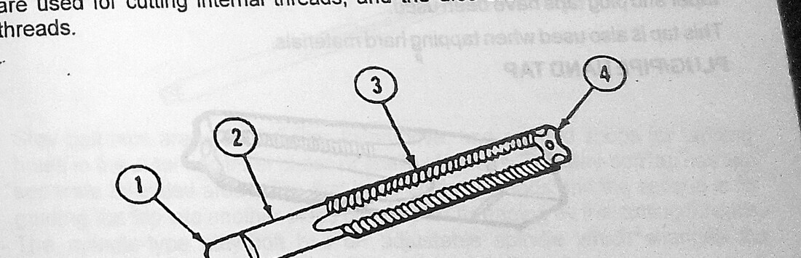
The set of three hand taps
Hand taps are supplied in sets of three of identical thread size, differing only in the length of the chamfer at the entering end. The reason is that the chamfer distributes the cutting over several threads: a long chamfer removes a little metal on each of many threads, which is easy to turn and easy to start square, but it cannot cut a full thread at the bottom of a blind hole.
- Taper tap — chamfered back over about eight to ten threads. Used first, to start the thread. The long taper is self-aligning: it centres itself in the hole and pulls itself square. In a through hole a taper tap alone may be sufficient.
- Plug tap (also called the second or intermediate tap) — chamfered over about three to five threads. Used after the taper tap to bring the thread to full depth over most of the hole. This is the general-purpose tap.
- Bottoming tap — chamfered over one to one and a half threads, essentially square-ended. Used last and only in blind holes, to cut a full thread almost to the bottom. It cannot start a thread and must never be used first.
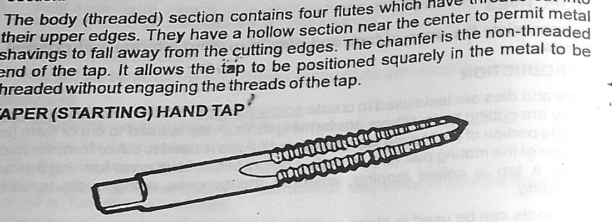
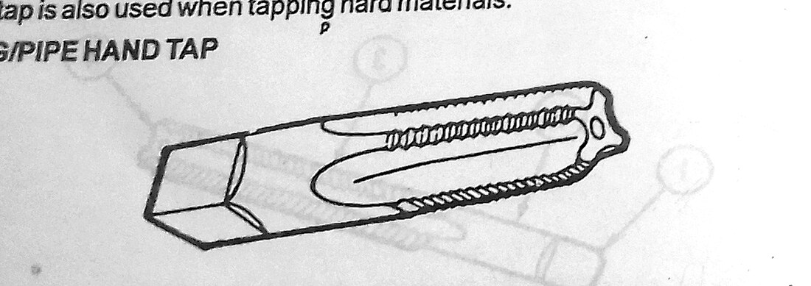
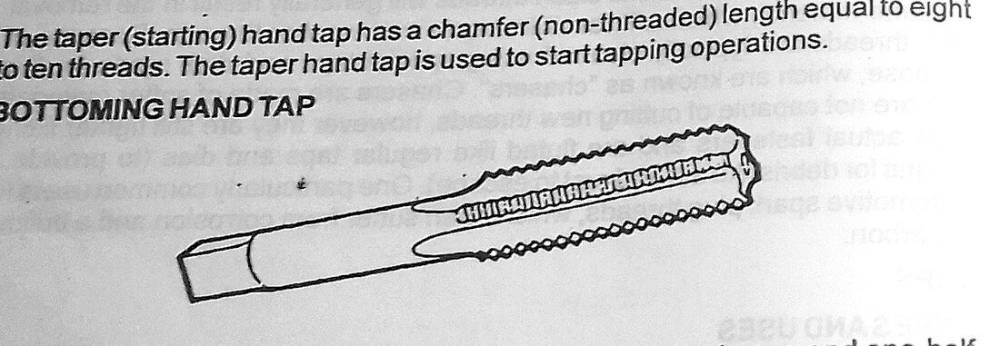
Special taps
Besides the standard set the manual illustrates several taps made for particular jobs:
- Mud tap — a heavy, coarse tap used to clean out and re-form threads in boiler mud holes and similar rough, fouled work.
- Staybolt tap — a very long tap used for threading through the two spaced plates of a boiler in one pass, so that the two threads are exactly in line and a staybolt can be run through both.
- Boiler taps — a family of taps for the various tapped openings in boiler shells and headers.
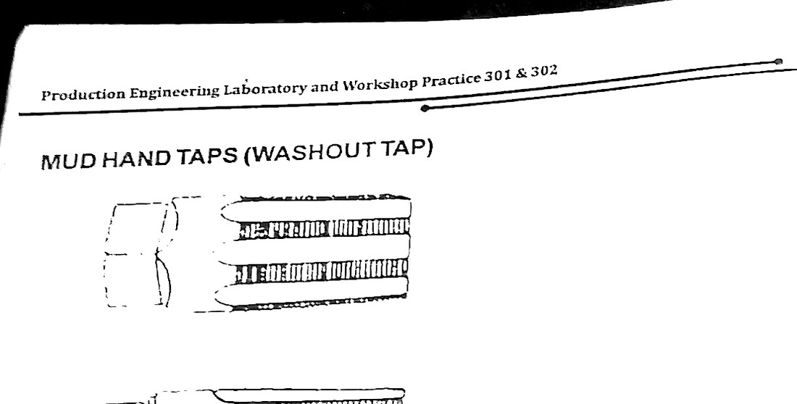
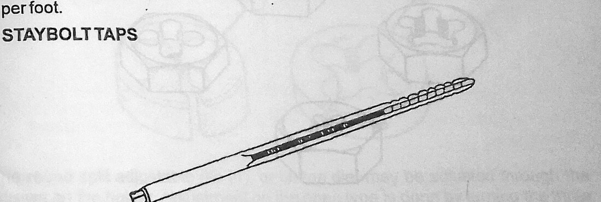
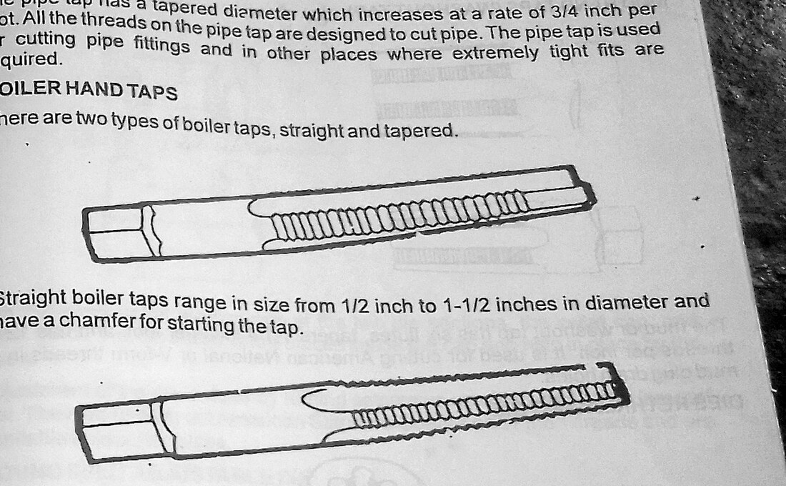
The tap wrench is the holder. Its two arms allow equal and opposite force to be applied at equal radii, which produces pure torque with no side thrust. A single-handled holder or an adjustable spanner applied to one side of the square is the classic cause of a broken tap, because the side force bends the tap in the hole.
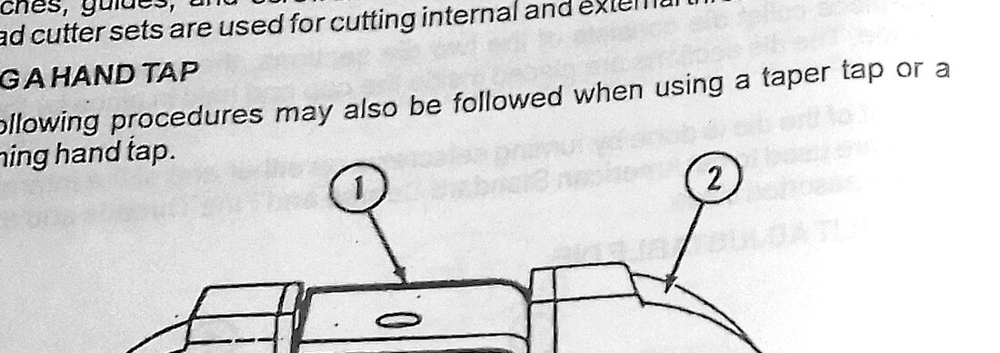
The tap drill size — the critical calculation
A tap does not make a hole; it cuts a thread in a hole that already exists. The hole must be larger than the minor diameter of the thread, or the tap will have to remove a full-depth thread and will jam and break; and it must be smaller than the major diameter, or there will be no thread at all. The standard approximation for a full-depth practical thread in the ISO metric system is
So an M10 × 1.5 thread takes a 8.5 mm drill, an M12 × 1.75 takes a 10.25 mm drill (10.2 mm in practice), and an M6 × 1.0 takes a 5.0 mm drill. This rule gives approximately 75 to 80 per cent of full thread depth, and that is deliberate. The relationship between thread engagement and strength is strongly non-linear: going from 75 per cent to 100 per cent thread engagement adds only about 5 per cent to the stripping strength of the joint, but it roughly doubles the torque required to drive the tap — and therefore the risk of breaking it. Seventy-five per cent is the accepted optimum.
Comparing (1) and (2) shows what the rule of thumb is doing: it leaves the hole about 0.23p larger than the theoretical root diameter, which is the 20–25 per cent of thread depth that is deliberately not cut.
A tap is glass-hard. It does not bend before it breaks, and once it has snapped off flush in a hole it cannot be drilled out with an ordinary drill, because the tap is harder than the drill. The component is usually scrap. Every one of the tapping precautions — correct drill size, squareness, a two-armed wrench, cutting oil, and reversing a quarter to half turn every half turn to break the chip — exists to prevent this single failure.
4.4 Dies and dieing
A die cuts an external thread. It is essentially a hardened nut with holes drilled through it to intersect the thread and form cutting edges and chip spaces. The manual illustrates the main types:
- Solid die — one piece, non-adjustable, cutting a fixed size. Robust, but if the thread comes out tight nothing can be done about it.
- Split die (button die) — a circular die with a radial slit, held in a die stock with three screws: the centre screw opens the die slightly and the two outer screws close it. This is the workshop standard, because the first pass can be taken with the die opened out and a second finishing pass with it closed to size.
- Collet die (adjustable screw-plate die) — a die held in a collet or chuck-type holder that squeezes it to size, giving a wider and more controllable range of adjustment than a split die.
- Rethreading die — a hexagonal die which can be driven with an ordinary spanner, used for cleaning up and restoring a damaged existing thread rather than cutting a new one. It is a repair tool, not a cutting tool.
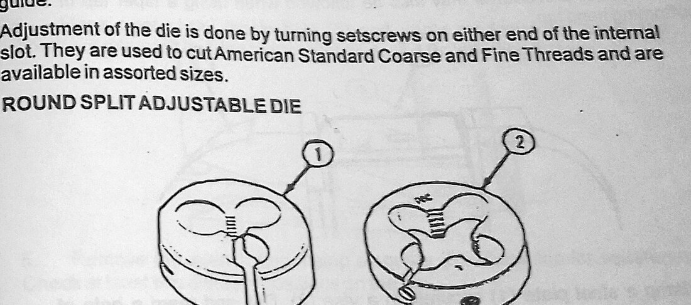
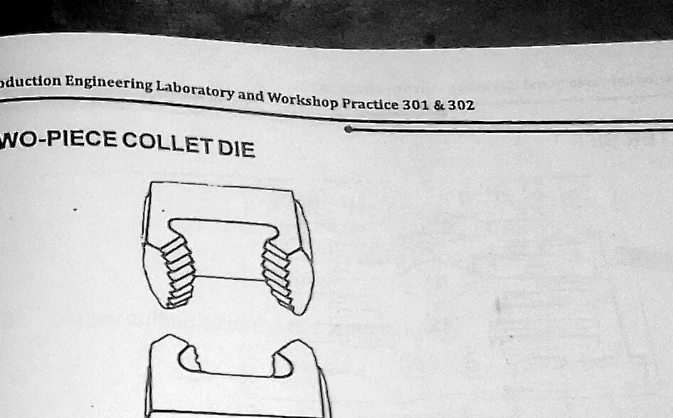
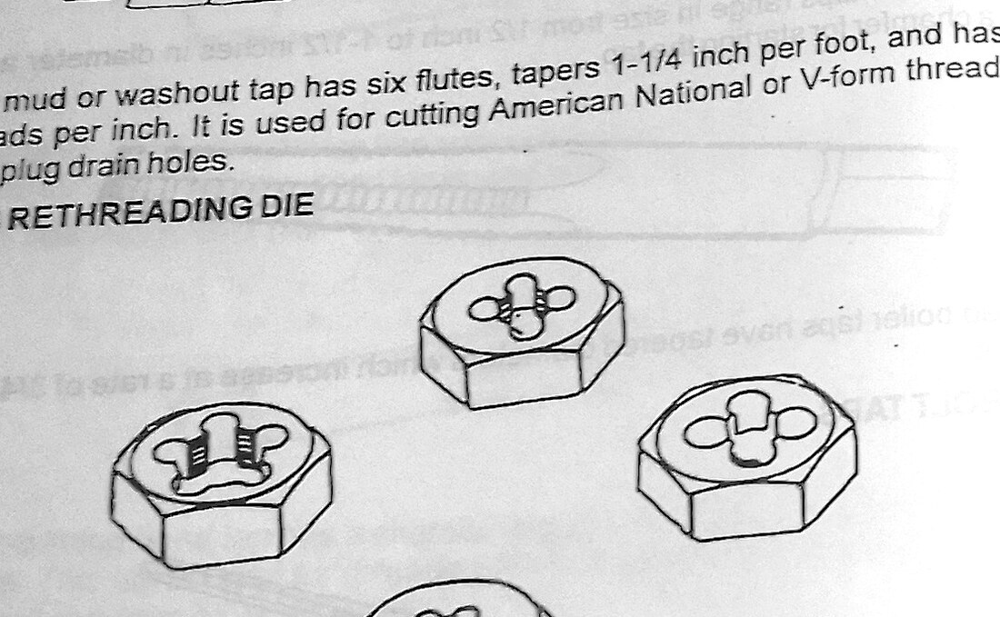
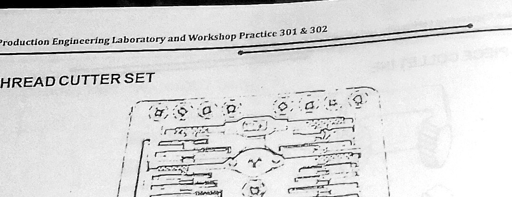
The blank for a die is prepared in two ways that matter. First, its diameter must be very slightly under the nominal major diameter — typically 0.1 to 0.15 mm under for a medium thread — because the die displaces as well as cuts metal, and a blank at exactly nominal size makes the die bind. Second, the end of the blank must be chamfered at about 45° down to below the root diameter. The chamfer lets the die's own lead engage progressively and start square; without it the die skates on the end face and starts crooked, and a crooked start cannot be corrected.
A split die has a lead chamfer on one face only, and the size marking is stamped on the other. The rule is simple: the marked face goes away from the work, so that the chamfered, leading face enters first. Fitting it the wrong way up is the second most common reason a beginner cannot get a die to start.
4.5 The bolt and nut
A bolt is a threaded cylindrical body with a head at one end; a nut is a block with a matching internal thread. Together they form the standard detachable joint. In this exercise the bolt is produced by turning or filing a blank to the correct diameter, forming the head to the required across-flats dimension, chamfering the end and running a die down it; the nut is produced by squaring a block, marking out and centre-punching the centre, drilling the tap drill hole, and tapping it with the set of three taps.
Two pieces of geometry govern the finished pair:
which is what determines the size of the blank from which a hexagonal head can be filed, and the engagement rule: the length of thread engagement in the nut should be at least equal to the nominal diameter for a steel nut on a steel bolt, so that the failure mode under overload is the bolt breaking in tension rather than the thread stripping. A standard nut is therefore roughly 0.8d thick, and the joint is designed so that the weakest element is the one whose failure is predictable and visible.
5 Table of Values
The tables below are the tool classifications given in the manual and the calculated values from equations (1), (2) and (3). No measured readings are presented, as the exercise is a production exercise rather than a measurement exercise; the dimensions given are the design and setting-out values.
| Tap | Chamfer length | Order of use | Application |
|---|---|---|---|
| Taper tap | 8 – 10 threads | First | Starting the thread; self-aligning. May complete a through hole on its own. |
| Plug (second) tap | 3 – 5 threads | Second | Bringing the thread to full depth; the general-purpose tap. |
| Bottoming tap | 1 – 1½ threads | Third | Full thread to the bottom of a blind hole only. Never used to start. |
| Die | Adjustment | Application |
|---|---|---|
| Solid die | None | Fixed-size production work; no recovery if the fit is tight. |
| Split (button) die | Radial slit, three screws in the stock | General workshop use; roughing pass opened, finishing pass closed. |
| Collet die | Squeezed to size by the collet holder | Wider and finer range of adjustment than the split die. |
| Rethreading die | None; hexagonal, driven by spanner | Cleaning up and restoring damaged existing threads. |
| Thread | Pitch p (mm) | Theoretical minor dia. d − 1.2268p (mm) | Tap drill d − p (mm) | Die blank dia. (mm) | Thread depth 0.6134p (mm) |
|---|---|---|---|---|---|
| M6 | 1.00 | 4.77 | 5.00 | 5.90 | 0.61 |
| M8 | 1.25 | 6.47 | 6.75 | 7.90 | 0.77 |
| M10 | 1.50 | 8.16 | 8.50 | 9.88 | 0.92 |
| M12 | 1.75 | 9.85 | 10.25 | 11.88 | 1.07 |
| M16 | 2.00 | 13.55 | 14.00 | 15.85 | 1.23 |
| M20 | 2.50 | 16.93 | 17.50 | 19.85 | 1.53 |
| Across flats, A/F (mm) | Across corners, 1.1547 × A/F (mm) | Suits thread |
|---|---|---|
| 10 | 11.55 | M6 |
| 13 | 15.01 | M8 |
| 17 | 19.63 | M10 |
| 19 | 21.94 | M12 |
| 24 | 27.71 | M16 |
6 Procedure
EPX 1 — Cutting the internal thread (the nut)
- The blank for the nut was cut from mild steel stock with the hacksaw and the faces were filed flat and square, the squareness being checked with the try square against a surface plate.
- The position of the hole was marked out with the scriber and rule, the centre being found by scribing the diagonals of the square face.
- The centre was centre-punched. This is not a formality: a twist drill entering an unpunched flat surface wanders, and a hole that starts off-centre cannot be brought back.
- The tap drill size was calculated as major diameter minus pitch and the corresponding drill selected.
- The blank was clamped — not hand held — in a machine vice on the drilling machine table, and the hole was drilled right through with the drill running at a moderate speed and with cutting oil applied.
- Both ends of the hole were lightly countersunk to remove the burr and to give the tap a clean entry.
- The work was transferred to the bench vice, held with the hole vertical.
- The taper tap was fitted in the tap wrench, entered in the hole and turned with light downward pressure for the first two or three turns. Its squareness was then checked with the try square in two directions at 90° to each other, and corrected while the thread was still only lightly formed.
- Cutting oil was applied and the tap was advanced by turning the wrench with both hands, applying equal force to each arm. After approximately every half turn forward, the tap was reversed by a quarter to half a turn to break the chip, then advanced again. This was continued until the tap ran right through.
- The tap was removed, the hole and the tap were brushed clean of chips, and the plug tap was run through in the same manner to bring the thread to full form.
- Because the hole was a through hole, the bottoming tap was not required. (Had the hole been blind, the bottoming tap would have been run in last, with the depth watched carefully so as not to drive it onto the bottom of the hole.)
- The finished thread was cleaned and checked for pitch with the thread pitch gauge and for fit with a standard bolt.
- The outside of the nut was then filed to the hexagonal across-flats dimension, working from the across-corners circle scribed on the face.
EPX 2 — Cutting the external thread (the bolt)
- Mild steel round bar was cut to length with the hacksaw and the end faced square with a file.
- The blank diameter was checked with the micrometer and reduced by filing (or by turning, where the lathe was used) to approximately 0.1–0.15 mm below the nominal major diameter.
- The leading end was chamfered at 45° down to below the root diameter of the thread, so that the die could pick up and start square.
- The blank was held vertically in the bench vice, using soft jaws to avoid bruising the surface, with the minimum projection above the jaws consistent with the required thread length so that it would not deflect.
- The split die was fitted into the die stock with the marked face uppermost — that is, with the chamfered lead facing the work — and the centre screw was tightened to open the die slightly for the roughing pass.
- The die was placed squarely on the chamfer and turned clockwise with firm, even downward pressure on both handles until it began to cut. Its squareness was then checked in two directions and corrected.
- Cutting oil was applied liberally, and the die was advanced with the same half-turn-forward, quarter-turn-back rhythm used for the tap, until the required thread length was reached.
- The die was unscrewed off the work, the two outer screws in the stock were tightened to close the die to full size, and a second finishing pass was taken over the same thread.
- The thread was cleaned, checked with the pitch gauge, and the run-out end was lightly filed to remove the feather edge.
- The head of the bolt was formed: the across-corners circle was scribed on the end, the six flats were filed to the marked lines, and the across-flats dimension was checked with the vernier caliper across all three pairs of flats.
Assembly
- The nut was run onto the bolt by hand. A correctly cut pair runs freely for the full length of engagement under finger pressure alone, with no perceptible rock or shake.
- The assembly was checked for perpendicularity of the nut face to the bolt axis, and for full engagement of the thread over the nut thickness.
7 Precautions
- Safety glasses were worn throughout. Chips from tapping steel are fine, sharp and travel.
- The work was always clamped in a vice, never held by hand, especially on the drilling machine, where a rotating drill can snatch a small workpiece and turn it into a flail.
- Sleeves were rolled, ties removed and long hair tied back before approaching the drilling machine, and the chuck key was removed before starting the spindle.
- The correct tap drill size was calculated and verified before drilling. An undersize hole is the most common cause of a broken tap.
- A two-armed tap wrench was used and both arms were loaded equally, so that the tap saw pure torque and no side thrust.
- Squareness of tap and die was checked with the try square in two planes after the first two or three turns, while the error could still be corrected.
- Cutting oil was applied continuously to both tap and die. Threading dry in steel tears the thread flanks, raises the torque and dulls the tool.
- The tap was reversed a quarter to half turn after every half turn of cut to break the chip and clear the flutes.
- Chips were cleared with a brush, never with the fingers, and the tap was withdrawn and cleaned periodically when tapping deeply.
- The taps were used strictly in order — taper, plug, bottoming — and the bottoming tap was never used to start a thread.
- The die was fitted with the lead chamfer towards the work, and the blank was chamfered before the die was offered up.
- Soft jaws were used in the vice to protect finished threads and machined surfaces from the serrated hard jaws.
- Files were used only with a properly fitted handle; a bare file tang will go into the palm if the file catches.
- Increasing resistance was treated as a warning to stop and clear chips, never as a reason to apply more force.
- The bench and vice were cleared of chips and swarf at the end of the session using a brush, and hands were washed of cutting oil.
8 Discussion
The exercise succeeded — a nut and bolt were produced that ran freely together — but the route there is instructive, and two failure modes are worth recording, because both are easy to fall into and neither is recoverable.
The first is the broken tap, and it almost always begins with drilling the hole using the nearest drill to hand rather than calculating the tap drill size. On an M10 × 1.5 thread the correct hole is 8.5 mm; a 7.5 mm hole asks the tap to cut not 75 per cent of thread depth but well over 100 per cent, and the torque rises very steeply, because the cutting force scales with the area of metal being removed per tooth. The tap snaps a short way into the hole and cannot be drilled out — it is hardened to a level no ordinary twist drill will touch — so the component is scrapped. Nothing makes the formula tap drill = major diameter − pitch concrete quite so quickly.
The second is the drunken thread, which follows from starting the die on a blank that has been faced square but not chamfered. The die will not bite on a flat end, so it gets pressed harder, and it eventually engages at a slight angle. Once a die has cut two or three turns out of square it has established its own helix, and every subsequent turn follows that wrong helix; the thread comes out visibly tapered, and a nut will start on it and then bind after four or five turns. There is no recovery — the blank has to be cut back and started again. Both causes are avoidable: no chamfer, and inadequate checking of squareness in the first few turns.
The half-turn-forward, quarter-turn-back rhythm deserves comment because it looks like superstition until you see what it does. A tap cutting continuously produces a continuous chip that curls in the flute; the flute has finite volume, and once it is full the chip has nowhere to go, so it packs solid and begins to wedge the tap against the hole wall. The torque then rises without any increase in actual cutting, and the tap breaks under a load that has nothing to do with cutting at all. Reversing snaps the chip into a short, discrete piece which falls clear or is carried out in the flute. The same reasoning explains why the tap should be fully withdrawn and brushed out several times during a deep hole.
On the die side, the two-pass technique with a split die earns its keep. A first pass taken with the die opened leaves a thread undersize on the flanks that a nut will not accept; closing the die and taking a second pass over the same thread brings it to size and the fit comes right. With a solid die there is no second chance — whatever the die gives on the first pass is the finished thread. This is the practical reason the split die is the workshop standard and the solid die is a production tool.
The filing of the hexagon head was a useful exercise in its own right. The temptation is to file each flat to the across-flats dimension measured from the opposite flat, but this only works if the first two flats are exactly parallel and exactly on the centre; otherwise the errors rotate round the head and the sixth flat comes out narrow. Scribing the across-corners circle first (equation 3) and filing each flat down to the chord it subtends distributes the error evenly, and the across-flats readings over the three pairs then agree closely.
Finally, on the engagement rule. Running the finished nut onto the finished bolt makes it clear that the fit is not a single dimension but a combination of pitch, flank angle and diameter all being right at once. The pitch gauge confirms the pitch and the micrometer the major diameter, but the thing that actually validates the job is the simplest test available — that the nut runs the full length of the thread under finger pressure with no shake. In a fastener, that is precisely the functional requirement, and it is a good illustration of the general principle that the best gauge is often the mating part itself.
9 Conclusion
The objectives of the practical were met. The tools of the bench fitting shop were identified and used, and the two families of hand thread-cutting tools were studied in detail: the set of three hand taps — taper, plug and bottoming, distinguished by chamfer length and used strictly in that order — together with the special mud, staybolt and boiler taps; and the four types of die — solid, split, collet and rethreading — distinguished by their means of adjustment.
An internal thread was successfully cut with taps in a hole drilled to a calculated tap drill size of (major diameter − pitch), which yields approximately 75 per cent thread engagement and represents the accepted compromise between joint strength and tapping torque. An external thread was successfully cut with a split die on a blank prepared 0.1–0.15 mm under nominal and chamfered at 45°, using a roughing pass with the die opened and a finishing pass with it closed. The two were assembled into a bolt and nut that ran freely by hand over the full engagement length.
It is concluded that hand thread cutting is governed by four rules, all of which were confirmed on the bench: the hole or blank must be prepared to the calculated size, the tool must be started and verified square within the first two or three turns, cutting fluid must be used continuously, and the tool must be reversed periodically to break the chip. Departure from the first rule broke a tap and departure from the second produced a drunken thread; observance of all four produced a sound, fitting thread pair.
Questions asked in the material
1. Show a working drawing of the bolt and nut produced.
The working drawing was produced in the drawing book in third-angle projection and comprises: for the bolt, a front elevation showing the hexagonal head with its across-flats dimension and head depth, the plain shank, the threaded length with the thread designation and the 45° chamfer at the end, plus an end view of the head; and for the nut, a plan showing the hexagon with across-flats and across-corners dimensions and the tapped hole, with a sectional elevation showing the thread form and nut thickness. A part-section through the assembled pair shows the thread engagement. All threads are designated in the ISO metric form Md × p, and the across-corners dimension is derived as 1.1547 × across-flats.
2. Using good sketches and short notes, state the operational steps.
Nut (internal thread): square the blank → mark out and centre punch the hole centre → calculate the tap drill as d − p → clamp and drill through with oil → countersink both ends → start the taper tap and check square in two planes → advance half a turn, reverse a quarter turn, with oil, until through → follow with the plug tap → (bottoming tap only if the hole is blind) → clean, check pitch and fit → file the hexagon to the scribed across-corners circle.
Bolt (external thread): cut the bar to length and face the end → reduce the diameter to 0.1–0.15 mm under nominal → chamfer the end at 45° below the root diameter → hold vertically in soft jaws with minimum projection → fit the split die in the stock with the marked face away from the work and the centre screw tightened to open it → start square with firm even pressure and check in two planes → cut with oil, half turn forward and quarter turn back → unscrew, close the die, take a finishing pass → file the hexagon head → assemble and test by hand.
3. State the uses of each tool used during the exercise.
| Tool | Use in this exercise |
|---|---|
| Bench vice, soft jaws | Holding the blank rigidly without bruising the finished surfaces. |
| Hacksaw | Cutting the bar and plate to length. |
| Scriber, rule, try square, surface plate | Marking out the hole centre and the hexagon; checking squareness of tap and die. |
| Centre punch and hammer | Locating the drill so that it does not wander off the marked centre. |
| Twist drill and drilling machine | Producing the tap drill hole at the calculated diameter. |
| Taper tap | Starting the internal thread; self-aligning over its long chamfer. |
| Plug tap | Bringing the internal thread to full depth. |
| Bottoming tap | Reserved for blind holes; not required for the through hole cut here. |
| Tap wrench | Applying pure torque to the tap through two equal arms. |
| Split die and die stock | Cutting the external thread in a roughing and a finishing pass. |
| Files | Facing the ends, chamfering the blank, filing the hexagon flats. |
| Vernier caliper / micrometer | Setting the blank diameter and checking across-flats on the head. |
| Thread pitch gauge | Verifying the pitch of the cut thread. |
| Cutting oil | Cooling and lubricating the cut; essential for thread finish and tool life. |
| Wire brush | Clearing chips from the flutes and the hole. |
4. List out the new things you have learnt.
Answered under What I learned.
5. State the safety precautions you observed.
Listed in full under Precautions. The ones peculiar to this section are: never hold work by hand on a drilling machine; remove the chuck key before starting; use a two-armed tap wrench so the tap sees no side load; clear chips with a brush and not with fingers; use a handled file; and treat rising resistance as a signal to stop and clear, never as a reason to push harder.
Special questions
S1. Calculate the tap drill size for an M12 × 1.75 thread and state the percentage of full thread it gives.
Tap drill = d − p = 12 − 1.75 = 10.25 mm (10.2 mm drill in practice).
The theoretical minor diameter is d − 1.2268p = 12 − 2.147 = 9.853 mm. The percentage of full thread engaged is
which is within the accepted 75–80 per cent band. Increasing this to 100 per cent by drilling 9.85 mm would add only a few per cent to the stripping strength but would roughly double the tapping torque.
S2. Why is the blank for a die made smaller than the nominal diameter, while the hole for a tap is made larger than the minor diameter?
Both adjustments do the same thing from opposite sides: they reduce the volume of metal the tool has to remove, and they allow for the fact that thread cutting displaces metal as well as cutting it. When a die cuts, the metal at the root is partly extruded outward, so the crests of the finished thread rise above the original blank surface; a blank at exactly nominal diameter therefore produces crests above nominal, the die binds, and the nut will not go on. Making the blank 0.1–0.15 mm under leaves room for that rise. For the tap, the hole must be above the theoretical minor diameter so that the tap cuts only about three quarters of the full thread depth, which keeps the torque, and therefore the risk of breakage, within reason at negligible cost in strength.
S3. A tap breaks off flush in a tapped hole. What are the options?
In descending order of preference: (i) if a portion projects, grip it with a tap extractor or pliers and back it out; (ii) if it is flush and the tap is broken into fragments rather than seized, use a spiral-fluted tap extractor whose fingers enter the flutes; (iii) shatter the tap with a punch and pick the pieces out — possible only because the tap is brittle, and only in a through hole; (iv) remove it by electrical discharge machining, which is unaffected by the hardness of the tap; (v) drill out the hole oversize and fit a thread insert or a screwed plug, re-drilling and re-tapping to the original size. In a teaching workshop the practical answer is usually that the component is scrap, which is why the preventive measures matter more than the recovery methods.
S4. Distinguish clearly between a bolt, a screw and a stud.
A bolt passes through clearance holes in both parts and is tightened by a nut on the far side; the clamping load is carried between the head and the nut, and neither part carries a thread. A screw passes through a clearance hole in the first part and engages a threaded hole tapped in the second; there is no nut, and the second component itself provides the female thread. A stud is threaded at both ends with a plain portion between: one end is screwed permanently into a tapped hole in the fixed component and left there, and the removable component is passed over the projecting end and secured with a nut. Studs are used where a joint is frequently dismantled — a cylinder head, for instance — because repeatedly screwing a bolt into a tapped hole in soft material eventually wears the female thread, whereas the stud is disturbed only once.
What I learned
- That a tap cuts a thread but does not make a hole, and the size of that hole — major diameter minus pitch — is the single most important number in the whole operation.
- Why 75 per cent thread engagement is the target rather than 100 per cent: the last quarter of thread depth adds almost nothing to strength but roughly doubles the torque and the risk of breaking the tap.
- The reason for the set of three taps, and that the difference between them is only the chamfer length — a long chamfer to start square, a short one to reach the bottom of a blind hole.
- That a tap wrench is two-armed for a mechanical reason, not for convenience: equal arms give a pure couple with no side thrust to bend the tap.
- The purpose of reversing the tap every half turn — to break the chip before it packs the flute solid and wedges the tap.
- That a die must be started on a chamfer, and that the marked face goes away from the work so the lead enters first.
- That the first two or three turns determine the whole thread. A tap or die that starts out of square establishes a wrong helix that cannot afterwards be corrected.
- The value of the split die's adjustment: a roughing pass opened out and a finishing pass closed to size, which a solid die cannot give.
- That a blank for dieing is made undersize because thread cutting displaces metal outward as well as removing it.
- That filing a hexagon from a scribed across-corners circle distributes the error evenly, whereas working flat-to-flat lets it accumulate on the last face.
- That the best final gauge for a thread is the mating component itself: a nut that runs the full length under finger pressure with no shake.
- That a broken tap usually means a scrapped component, which makes every preventive precaution in this section cheap by comparison.